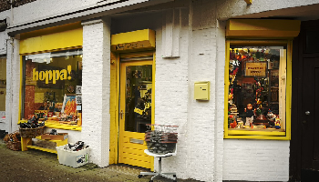
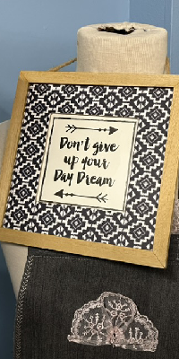

Ontdek Hoppa!

Dé duurzame winkel in Amsterdam voor unieke tweedehands vondsten. Hier vind je betaalbare schatten, van meubels tot mode, en geef je items een nieuw leven.
 Hoppa! gaat verder dan alleen winkelen. Hoppa! doneert alle winsten aan de voedselbank, zodat het ook teruggeeft aan de gemeenschap.
Met zijn betaalbare prijzen en gastvrije sfeer nodigt Hoppa! je uit om bewuste keuzes te maken zonder concessies te doen aan stijl.
Kortom, Hoppa! maakt duurzaam winkelen in Amsterdam niet alleen eenvoudig, maar ook stijlvol. Kom langs en ontdek een wereld van hergebruik bij Hoppa!